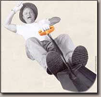

Who would believe the basic garden shovel could be redesigned to work better than ever before? We were astonished when we tested the new garden spade and shovel from Fiskars Garden Tools. These shovels truly do work better than all the other shovels we've ever used. They don't really look much different at first glance, but as soon as you step up and push one into the ground, you'll feel the improvements.
The Fiskars folks made adjustments to the shapes and angles of the various parts that add up to a group of garden tools that make digging in the dirt easier than it's ever been. Such a major design improvement is rare in everyday tools, and so we are awarding the first-ever Mother Earth News "Tools for Wiser Living" award to the Fiskars shovels.
Fiskars originated in Finland and now has a U.S. office in Wisconsin. The company has long been known for exceptional, functional designs. Its name became a household word in the 1960s with the introduction of Fiskars" famous orange-handled scissors, now in the permanent design collection of the Museum of Modern Art in New York.
Look for the same familiar orange on the handles of these garden shovels, and all the other tools in the company's garden line. The folks at Fiskars want you to associate orange with excellence, so you'll put their garden tools in your garage like you've put their scissors in your kitchen drawers.
Pat Taylor, director of engineering services for Fiskars" Tool Operation, says the new garden tool line is made in the United States, but the company has many years of experience with such tools, particularly in Europe. To redesign the traditional shovel, customer focus groups and landscape professionals were asked to help identify problems with standard tools on the market; the insights they provided resulted in patented changes to everything from grips to step plates to blades.
Taylor says of the blades: "The common perception is all shovels look the same, but many don't have a pre-sharpened blade edge." Fiskars shovels now do, and it makes them slide more easily into the ground. Also, the transplant spade's blade is made of thicker steel than normal, to give it more strength. The D-shaped orange grips on the spades are designed to be as comfortable as those scissor handles. Also, they're bigger than standard spade handles, so you can use both hands when you need extra oomph. They're formed in such a way as to provide two possible gripping positions, and they're set on the handle at a slight angle to give more leverage and more clearance for your knees.
The steel handle shafts on the shovels and spades are tear-drop shaped, rather than simply round, to provide a stronger, more comfortable grip, as well as less fatigue and improved handling of heavy loads. The step plate is bigger than average as well, giving you more control and comfort underfoot, especially with lengthy digging tasks. Taylor says most step plates are simply the rolled edge of the blade, which will make your arches hurt if you have to do very much digging, and which can be slippery, too. Fiskars" version is a full inch wide and flat, with a raised, slip-resistant pattern stamped into the steel.
A limited "if used for its intended purpose" lifetime warranty is given on all Fiskars garden tools; under normal use, they will be replaced if they break. The suggested retail price for the shovels is $28.99; the Fiskars post hole digger is $54. These and other Fiskars garden tools are sold at Lowe's, as well as online from Fiskars. To find a retailer near you, go to www.fiskars.com . - Cheryl Long and Nancy Smith
Win Your Own Fiskars Shovel
Help us find more great tools! Send us reports of your favorite hand or power tools. We'll post the best ones on our Web site and send Fiskars shovels to the authors of the top 10. Send reports to: Mother Earth News; 1503 S.W. 42nd St.; Topeka, KS 66609, or letters@MotherEarthNews.com .
|
 |
|
|